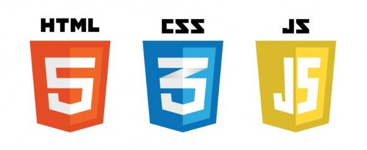

Disciplinas Oferecidas
Confira as disciplinas que oferecemos para ajudar você a se tornar um desenvolvedor web de sucesso!

Confira as disciplinas que oferecemos para ajudar você a se tornar um desenvolvedor web de sucesso!

A programação orientada a objetos é um paradigma de programação que utiliza objetos e classes para organizar o código e resolver problemas de forma mais eficiente.